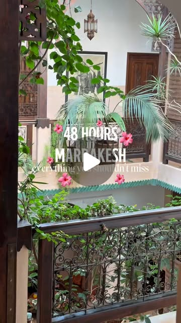

Instagram Reel

There are a few things I’d completely skip if I only had 48 hours in...
video transcript (enriched by ClaudeClaw)
Summary
[CAPTION]
There are a few things I’d completely skip if I only had 48 hours in Marrakesh… but these wouldn’t be one of them 🇲🇦👇🏼
If you’re planning a trip to Morocco and wondering what to do in Marrakesh, this is the Marrakesh itinerary I’d follow if I only had 2 days in the city.
After exp...
[CAPTION]
There are a few things I’d completely skip if I only had 48 hours in Marrakesh… but these wouldn’t be one of them 🇲🇦👇🏼
If you’re planning a trip to Morocco and wondering what to do in Marrakesh, this is the Marrakesh itinerary I’d follow if I only had 2 days in the city.
After exploring Marrakesh ourselves, these are the places we’d actually prioritise:
📍 Le Slimana — our favourite rooftop restaurant in Marrakesh for sunset, incredible views and the best tagine we had during our trip. I’d recommend booking ahead!
📍 Madrasa Ben Youssef — easily one of the most beautiful places to visit in Marrakesh. Go early if you want to experience the architecture without the biggest crowds.
📍 The Marrakesh souks — you could spend HOURS wandering through them. Explore the smaller streets, shop for Moroccan souvenirs and don’t be afraid to barter respectfully.
📍 The tanneries — definitely one of the more controversial things to do in Marrakesh, but fascinating if you want to understand more about how leather is traditionally produced.
🍊 And don’t overlook the simple things: fresh orange juice, local olive stalls, Moroccan pastries and the tiny local vendors ended up being some of our favourite finds.
If you’re researching Marrakesh things to do, a 2 day Marrakesh itinerary, where to eat in Marrakesh, Marrakesh travel tips or what to know before visiting Morocco, save this for your trip.
We’ve got an entire Morocco travel series covering our Marrakesh itineraries, restaurants, riad recommendations, road trips and all the things we wish we knew before visiting 🇲🇦
Follow @thoughtsofatraveller for more Morocco travel tips and full-time travel guides 🌍
#visitmarrakesh #moroccotrip #travelguides #traveltips #marrakeshtravel
[VIDEO]
If I only had 48 hours in Marrakesh, these are the things I would prioritize doing as someone who made all the mistakes so you don't have to. Welcome back to my Morocco series and check this playlist for all the tips you need to have the best time. At the very top of our list would have to be Lusimana, an amazing rooftop restaurant which has the best tagine we had in Marrakesh, as well as the perfect sunset view with amazing vibe. I would recommend booking as it can get busy, but it definitely shouldn't be missed. Moldrasa Ben Yusuf was all over our 4U page, and for good reason because the architecture here is mind blowing. If you want to avoid the crowds, go early in the morning and you can book tickets on arrival for 50 germ per person. The souks are colourful, lively, and full of everything you could possibly wish for, and I will add the ones we loved on screen now. Bartering is part of the culture here, so never accept the first price you are offered, but also make sure you are respectful and do it with a smile. The tanneries have very mixed reviews, but it is incredible watching the environment in which Lever is made. Orange juice hits different here, so make sure you stop at one of the stores. Come back for all the tips we wish we knew before visiting.
View original on Instagram Reel →